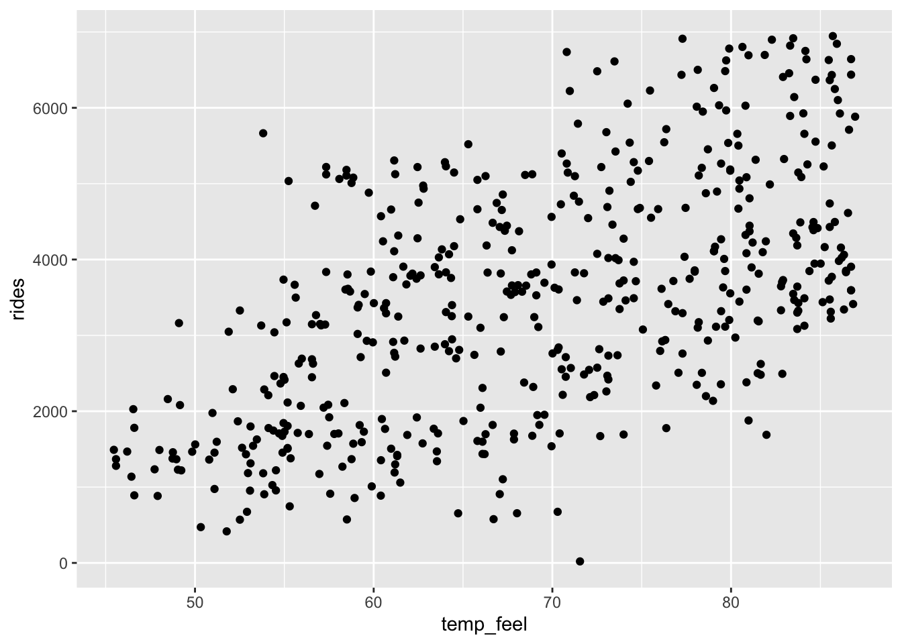
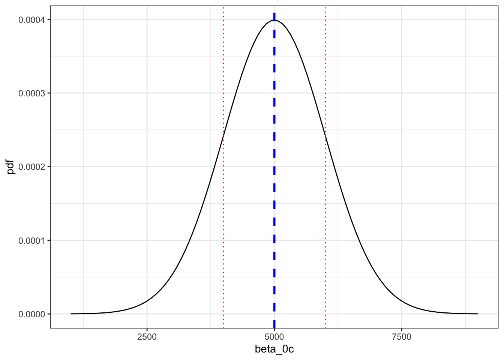
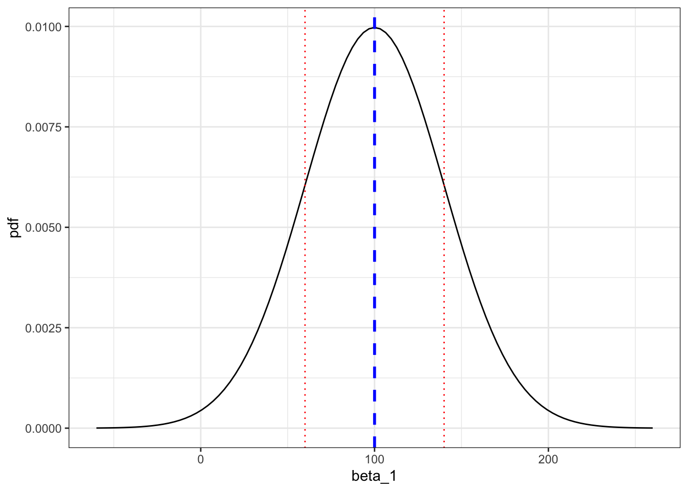
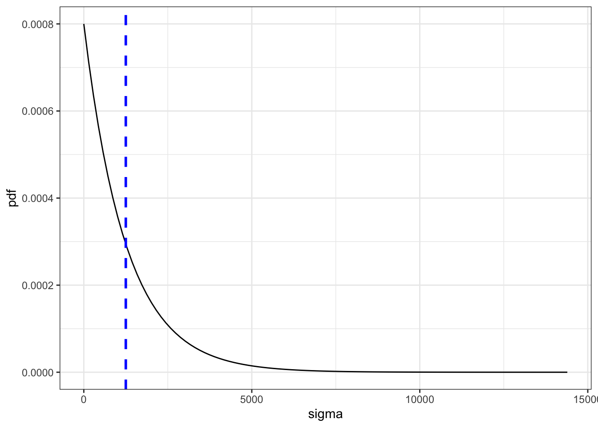
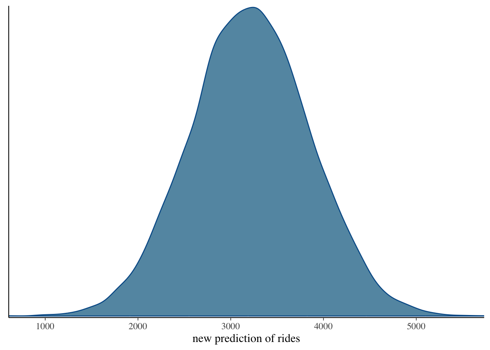

library(bayesrules)
library(tidyverse)
library(rstan)
library(rstanarm)
library(bayesplot)
library(tidybayes)
library(janitor)
library(broom.mixed)
library(ggpubr)
options(scipen = 999)Bayesian Regression
Load Libraries
Today’s Data
Capital Bikeshare is a bike sharing service in the Washington, D.C. area. To best serve its registered members, the company must understand the demand for its service.
data(bikes)Exploratory Data Analysis - 10 minutes
Relationship between temp and rides
This is the first time in this class we are considering the relationship between two numeric variables
Frequentist Approach
Add smooth, stat cor, and theme
ggplot(data = bikes, aes(x = temp_feel, y = rides)) +
geom_point() 
Display intercept and slope
- For each additional degree in perceived temperature, there is an increase of about 81.88 bike rides
lm(rides ~ temp_feel, data = bikes)
Call:
lm(formula = rides ~ temp_feel, data = bikes)
Coefficients:
(Intercept) temp_feel
-2179.27 81.88 Bayesian Approach
Based on past bikeshare analyses, suppose we have the following prior understanding of this relationship:
On an average temperature day, say 65 or 70 degrees for D.C., there are typically around 5000 riders, though this average could be somewhere between 3000 and 7000.
plot_normal(mean = 5000, sd = 1000) + labs(x = "beta_0c", y = "pdf") + geom_vline(xintercept = 5000, linetype = "dashed", color = "blue", size = 1) + # Mean geom_vline(xintercept = 5000 + 1000, linetype = "dotted", color = "red") + # +1 SD geom_vline(xintercept = 5000 - 1000, linetype = "dotted", color = "red") + # -1 SD theme_bw()Warning: Using `size` aesthetic for lines was deprecated in ggplot2 3.4.0. ℹ Please use `linewidth` instead.
For every one degree increase in temperature, ridership typically increases by 100 rides, though this average increase could be as low as 20 or as high as 180.
plot_normal(mean = 100, sd = 40) + labs(x = "beta_1", y = "pdf") + geom_vline(xintercept = 100, linetype = "dashed", color = "blue", size = 1) + # Mean geom_vline(xintercept = 140, linetype = "dotted", color = "red") + # +1 SD geom_vline(xintercept = 60, linetype = "dotted", color = "red") + theme_bw()
At any given temperature, daily ridership will tend to vary with a moderate standard deviation of 1250 rides.
plot_gamma(shape = 1, rate = 0.0008) + labs(x = "sigma", y = "pdf") + geom_vline(xintercept = 1250, linetype = "dashed", color = "blue", size = 1) + theme_bw()
Create the Bayesian Model
bike_model <- stan_glm(rides ~ temp_feel, data = bikes,
family = gaussian,
prior_intercept = normal(5000, 1000),
prior = normal(100, 40),
prior_aux = exponential(0.0008),
chains = 4, iter = 5000*2, seed = 84735)
SAMPLING FOR MODEL 'continuous' NOW (CHAIN 1).
Chain 1:
Chain 1: Gradient evaluation took 4.6e-05 seconds
Chain 1: 1000 transitions using 10 leapfrog steps per transition would take 0.46 seconds.
Chain 1: Adjust your expectations accordingly!
Chain 1:
Chain 1:
Chain 1: Iteration: 1 / 10000 [ 0%] (Warmup)
Chain 1: Iteration: 1000 / 10000 [ 10%] (Warmup)
Chain 1: Iteration: 2000 / 10000 [ 20%] (Warmup)
Chain 1: Iteration: 3000 / 10000 [ 30%] (Warmup)
Chain 1: Iteration: 4000 / 10000 [ 40%] (Warmup)
Chain 1: Iteration: 5000 / 10000 [ 50%] (Warmup)
Chain 1: Iteration: 5001 / 10000 [ 50%] (Sampling)
Chain 1: Iteration: 6000 / 10000 [ 60%] (Sampling)
Chain 1: Iteration: 7000 / 10000 [ 70%] (Sampling)
Chain 1: Iteration: 8000 / 10000 [ 80%] (Sampling)
Chain 1: Iteration: 9000 / 10000 [ 90%] (Sampling)
Chain 1: Iteration: 10000 / 10000 [100%] (Sampling)
Chain 1:
Chain 1: Elapsed Time: 0.286 seconds (Warm-up)
Chain 1: 0.43 seconds (Sampling)
Chain 1: 0.716 seconds (Total)
Chain 1:
SAMPLING FOR MODEL 'continuous' NOW (CHAIN 2).
Chain 2:
Chain 2: Gradient evaluation took 1.5e-05 seconds
Chain 2: 1000 transitions using 10 leapfrog steps per transition would take 0.15 seconds.
Chain 2: Adjust your expectations accordingly!
Chain 2:
Chain 2:
Chain 2: Iteration: 1 / 10000 [ 0%] (Warmup)
Chain 2: Iteration: 1000 / 10000 [ 10%] (Warmup)
Chain 2: Iteration: 2000 / 10000 [ 20%] (Warmup)
Chain 2: Iteration: 3000 / 10000 [ 30%] (Warmup)
Chain 2: Iteration: 4000 / 10000 [ 40%] (Warmup)
Chain 2: Iteration: 5000 / 10000 [ 50%] (Warmup)
Chain 2: Iteration: 5001 / 10000 [ 50%] (Sampling)
Chain 2: Iteration: 6000 / 10000 [ 60%] (Sampling)
Chain 2: Iteration: 7000 / 10000 [ 70%] (Sampling)
Chain 2: Iteration: 8000 / 10000 [ 80%] (Sampling)
Chain 2: Iteration: 9000 / 10000 [ 90%] (Sampling)
Chain 2: Iteration: 10000 / 10000 [100%] (Sampling)
Chain 2:
Chain 2: Elapsed Time: 0.357 seconds (Warm-up)
Chain 2: 0.423 seconds (Sampling)
Chain 2: 0.78 seconds (Total)
Chain 2:
SAMPLING FOR MODEL 'continuous' NOW (CHAIN 3).
Chain 3:
Chain 3: Gradient evaluation took 1.5e-05 seconds
Chain 3: 1000 transitions using 10 leapfrog steps per transition would take 0.15 seconds.
Chain 3: Adjust your expectations accordingly!
Chain 3:
Chain 3:
Chain 3: Iteration: 1 / 10000 [ 0%] (Warmup)
Chain 3: Iteration: 1000 / 10000 [ 10%] (Warmup)
Chain 3: Iteration: 2000 / 10000 [ 20%] (Warmup)
Chain 3: Iteration: 3000 / 10000 [ 30%] (Warmup)
Chain 3: Iteration: 4000 / 10000 [ 40%] (Warmup)
Chain 3: Iteration: 5000 / 10000 [ 50%] (Warmup)
Chain 3: Iteration: 5001 / 10000 [ 50%] (Sampling)
Chain 3: Iteration: 6000 / 10000 [ 60%] (Sampling)
Chain 3: Iteration: 7000 / 10000 [ 70%] (Sampling)
Chain 3: Iteration: 8000 / 10000 [ 80%] (Sampling)
Chain 3: Iteration: 9000 / 10000 [ 90%] (Sampling)
Chain 3: Iteration: 10000 / 10000 [100%] (Sampling)
Chain 3:
Chain 3: Elapsed Time: 0.276 seconds (Warm-up)
Chain 3: 0.407 seconds (Sampling)
Chain 3: 0.683 seconds (Total)
Chain 3:
SAMPLING FOR MODEL 'continuous' NOW (CHAIN 4).
Chain 4:
Chain 4: Gradient evaluation took 1.1e-05 seconds
Chain 4: 1000 transitions using 10 leapfrog steps per transition would take 0.11 seconds.
Chain 4: Adjust your expectations accordingly!
Chain 4:
Chain 4:
Chain 4: Iteration: 1 / 10000 [ 0%] (Warmup)
Chain 4: Iteration: 1000 / 10000 [ 10%] (Warmup)
Chain 4: Iteration: 2000 / 10000 [ 20%] (Warmup)
Chain 4: Iteration: 3000 / 10000 [ 30%] (Warmup)
Chain 4: Iteration: 4000 / 10000 [ 40%] (Warmup)
Chain 4: Iteration: 5000 / 10000 [ 50%] (Warmup)
Chain 4: Iteration: 5001 / 10000 [ 50%] (Sampling)
Chain 4: Iteration: 6000 / 10000 [ 60%] (Sampling)
Chain 4: Iteration: 7000 / 10000 [ 70%] (Sampling)
Chain 4: Iteration: 8000 / 10000 [ 80%] (Sampling)
Chain 4: Iteration: 9000 / 10000 [ 90%] (Sampling)
Chain 4: Iteration: 10000 / 10000 [100%] (Sampling)
Chain 4:
Chain 4: Elapsed Time: 0.246 seconds (Warm-up)
Chain 4: 0.422 seconds (Sampling)
Chain 4: 0.668 seconds (Total)
Chain 4: bike_modelstan_glm
family: gaussian [identity]
formula: rides ~ temp_feel
observations: 500
predictors: 2
------
Median MAD_SD
(Intercept) -2195.3 353.8
temp_feel 82.2 5.1
Auxiliary parameter(s):
Median MAD_SD
sigma 1282.5 40.2
------
* For help interpreting the printed output see ?print.stanreg
* For info on the priors used see ?prior_summary.stanregInterpretation
The slope (or coefficient) for
temp_feelis 82.2, meaning that for every 1 degree increase in perceived temperature, the number of rides increases by an average of 82.2 rides.The MAD_SD of 5.1 reflects the uncertainty in the slope estimate, indicating that the true slope could vary by about 5.1 rides.
In your case, a median σof 1282.5 means that the actual number of rides often deviates from what the model predicts by an average of about 1282.5 rides. This indicates a considerable amount of variability in the data.
- Moderate Variability: The term “moderate variability” suggests that while the model captures some trends (like how temperature affects ridership), there are many factors influencing the number of rides that are not accounted for by temperature alone.
Let’s visualize our models prediction of rides for a 75 degree day (feel)
set.seed(84735)
shortcut_prediction <-
posterior_predict(bike_model, newdata = data.frame(temp_feel = 75))mcmc_dens(shortcut_prediction) +
xlab("predicted ridership on a 75 degree day (feel)")
Adding more features to the model
bike_model_all <- stan_glm(
rides ~ season + year + month + day_of_week + weekend + holiday + temp_actual + temp_feel + humidity + windspeed + weather_cat,
data = bikes,
family = gaussian, # because we're predicting continuous data (number of rides)
chains = 4,
iter = 5000,
seed = 84735
)
SAMPLING FOR MODEL 'continuous' NOW (CHAIN 1).
Chain 1:
Chain 1: Gradient evaluation took 2.8e-05 seconds
Chain 1: 1000 transitions using 10 leapfrog steps per transition would take 0.28 seconds.
Chain 1: Adjust your expectations accordingly!
Chain 1:
Chain 1:
Chain 1: Iteration: 1 / 5000 [ 0%] (Warmup)
Chain 1: Iteration: 500 / 5000 [ 10%] (Warmup)
Chain 1: Iteration: 1000 / 5000 [ 20%] (Warmup)
Chain 1: Iteration: 1500 / 5000 [ 30%] (Warmup)
Chain 1: Iteration: 2000 / 5000 [ 40%] (Warmup)
Chain 1: Iteration: 2500 / 5000 [ 50%] (Warmup)
Chain 1: Iteration: 2501 / 5000 [ 50%] (Sampling)
Chain 1: Iteration: 3000 / 5000 [ 60%] (Sampling)
Chain 1: Iteration: 3500 / 5000 [ 70%] (Sampling)
Chain 1: Iteration: 4000 / 5000 [ 80%] (Sampling)
Chain 1: Iteration: 4500 / 5000 [ 90%] (Sampling)
Chain 1: Iteration: 5000 / 5000 [100%] (Sampling)
Chain 1:
Chain 1: Elapsed Time: 11.431 seconds (Warm-up)
Chain 1: 13.996 seconds (Sampling)
Chain 1: 25.427 seconds (Total)
Chain 1:
SAMPLING FOR MODEL 'continuous' NOW (CHAIN 2).
Chain 2:
Chain 2: Gradient evaluation took 1.7e-05 seconds
Chain 2: 1000 transitions using 10 leapfrog steps per transition would take 0.17 seconds.
Chain 2: Adjust your expectations accordingly!
Chain 2:
Chain 2:
Chain 2: Iteration: 1 / 5000 [ 0%] (Warmup)
Chain 2: Iteration: 500 / 5000 [ 10%] (Warmup)
Chain 2: Iteration: 1000 / 5000 [ 20%] (Warmup)
Chain 2: Iteration: 1500 / 5000 [ 30%] (Warmup)
Chain 2: Iteration: 2000 / 5000 [ 40%] (Warmup)
Chain 2: Iteration: 2500 / 5000 [ 50%] (Warmup)
Chain 2: Iteration: 2501 / 5000 [ 50%] (Sampling)
Chain 2: Iteration: 3000 / 5000 [ 60%] (Sampling)
Chain 2: Iteration: 3500 / 5000 [ 70%] (Sampling)
Chain 2: Iteration: 4000 / 5000 [ 80%] (Sampling)
Chain 2: Iteration: 4500 / 5000 [ 90%] (Sampling)
Chain 2: Iteration: 5000 / 5000 [100%] (Sampling)
Chain 2:
Chain 2: Elapsed Time: 12.012 seconds (Warm-up)
Chain 2: 12.776 seconds (Sampling)
Chain 2: 24.788 seconds (Total)
Chain 2:
SAMPLING FOR MODEL 'continuous' NOW (CHAIN 3).
Chain 3:
Chain 3: Gradient evaluation took 1.8e-05 seconds
Chain 3: 1000 transitions using 10 leapfrog steps per transition would take 0.18 seconds.
Chain 3: Adjust your expectations accordingly!
Chain 3:
Chain 3:
Chain 3: Iteration: 1 / 5000 [ 0%] (Warmup)
Chain 3: Iteration: 500 / 5000 [ 10%] (Warmup)
Chain 3: Iteration: 1000 / 5000 [ 20%] (Warmup)
Chain 3: Iteration: 1500 / 5000 [ 30%] (Warmup)
Chain 3: Iteration: 2000 / 5000 [ 40%] (Warmup)
Chain 3: Iteration: 2500 / 5000 [ 50%] (Warmup)
Chain 3: Iteration: 2501 / 5000 [ 50%] (Sampling)
Chain 3: Iteration: 3000 / 5000 [ 60%] (Sampling)
Chain 3: Iteration: 3500 / 5000 [ 70%] (Sampling)
Chain 3: Iteration: 4000 / 5000 [ 80%] (Sampling)
Chain 3: Iteration: 4500 / 5000 [ 90%] (Sampling)
Chain 3: Iteration: 5000 / 5000 [100%] (Sampling)
Chain 3:
Chain 3: Elapsed Time: 10.63 seconds (Warm-up)
Chain 3: 12.341 seconds (Sampling)
Chain 3: 22.971 seconds (Total)
Chain 3:
SAMPLING FOR MODEL 'continuous' NOW (CHAIN 4).
Chain 4:
Chain 4: Gradient evaluation took 1.6e-05 seconds
Chain 4: 1000 transitions using 10 leapfrog steps per transition would take 0.16 seconds.
Chain 4: Adjust your expectations accordingly!
Chain 4:
Chain 4:
Chain 4: Iteration: 1 / 5000 [ 0%] (Warmup)
Chain 4: Iteration: 500 / 5000 [ 10%] (Warmup)
Chain 4: Iteration: 1000 / 5000 [ 20%] (Warmup)
Chain 4: Iteration: 1500 / 5000 [ 30%] (Warmup)
Chain 4: Iteration: 2000 / 5000 [ 40%] (Warmup)
Chain 4: Iteration: 2500 / 5000 [ 50%] (Warmup)
Chain 4: Iteration: 2501 / 5000 [ 50%] (Sampling)
Chain 4: Iteration: 3000 / 5000 [ 60%] (Sampling)
Chain 4: Iteration: 3500 / 5000 [ 70%] (Sampling)
Chain 4: Iteration: 4000 / 5000 [ 80%] (Sampling)
Chain 4: Iteration: 4500 / 5000 [ 90%] (Sampling)
Chain 4: Iteration: 5000 / 5000 [100%] (Sampling)
Chain 4:
Chain 4: Elapsed Time: 11.452 seconds (Warm-up)
Chain 4: 11.302 seconds (Sampling)
Chain 4: 22.754 seconds (Total)
Chain 4: new_data_for_prediction <- data.frame(
temp_feel = 75,
temp_actual = 70,
season = "summer",
year = 2011,
month = "Sep",
day_of_week = "Wed",
weekend = FALSE,
holiday = "yes",
humidity = 53.6667,
windspeed = 16,
weather_cat = "categ1"
)prediction <-
posterior_predict(bike_model_all, newdata = new_data_for_prediction)mcmc_dens(prediction) +
xlab("new prediction of rides")
Challenge
Build two dataframes for prediction (similiar to new_data_for_prediction above) but try to make one result in a very low predicted number of rides and one with a very high predicted number of rides